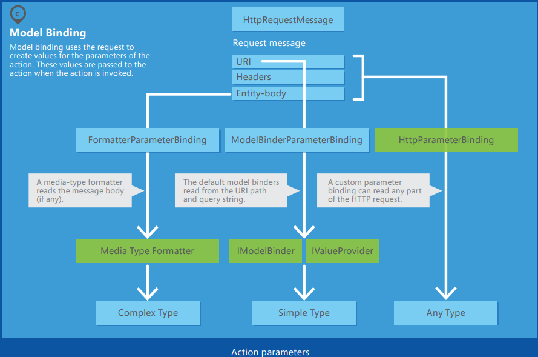
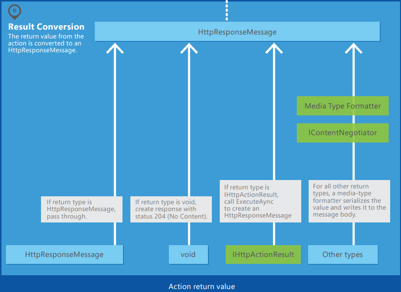

ASP.NET WebAPI
design for extensibility
Shiwei Zhou
Agenda
- Http message lifecycle
- Message handlers
- Route processing
- Parameter Binding
- Action filters
- Result Conversion

Http Message Handlers

Predefined Message Handlers
- HttpServer: gets the request from the host.
- HttpRoutingDispatcher: dispatches the request based on the route.
- HttpControllerDispatcher: sends the request to a Web API controller.
How to customize?
Task<HttpResponseMessage> SendAsync(
HttpRequestMessage request,
CancellationToken cancellationToken);
- Process the request message.
- Call base.SendAsync to send the request to the inner handler.
- The inner handler returns a response message. (asynchronous)
- Process the response and return it to the caller.
When to use?
cross-cutting concerns
operate at the level of HTTP messages
- Read or modify request headers.
- Add a response header to responses.
- Validate requests before they reach the controller.
Examples
- X-HTTP-Method-Override
- JSON Vulnerability Protection
Pre-Route Message Handlers

Pre-Route Message Handlers

Examples
- Checking for an API Key
Routing
- Matching the URI to a route template.
- Selecting a controller.
- Selecting an action.
Route templates
URI with placeholder values
"api/{controller}/public/{category}/{id}"
Controller selection
- Look in the route dictionary for the key "controller".
- Take the value for this key and append the string "Controller" to get the type name.
-
Look for a Web API controller with this type name - IHttpControllerTypeResolver
- implement IHttpController
- are not abstract
- have a name that ends in "Controller"


Extension Points
| Interface | Description |
|---|---|
| IHttpControllerSelector | Selects the controller. |
| IHttpControllerTypeResolver | Gets the list of controller types. |
| IAssembliesResolver | Get the list of project assemblies. |
| IHttpControllerActivator | Create new controller instances. |
Example
Customizing controller discovery in ASP.NET Web APICode Analysis - Dependency injection
- Dependency Injection in ASP.NET Web API 2
- How to use IoC to Inject dependency for web api controller?
Action Selection
IHttpActionSelector.SelectAction (HttpControllerContext) -> HttpActionDescriptor
- Create a list of all actions on the controller that match the HTTP request method.
- If the route dictionary has an "action" entry, remove actions whose name does not match this value.
- Try to match action parameters to the URI.
- Ignore actions with the [NonAction] attribute.
Extension Points
| Interface | Description |
|---|---|
| IHttpActionSelector | Selects the action. |
| IHttpActionInvoker | Invokes the action. |
Parameter binding
Default binding rule
- “simple” type -> from URI
- .NET primitive types (int, bool, double, and so forth)
- TimeSpan, DateTime, Guid, decimal, and string
- any type with a type converter that can convert from a string.
- Complex types -> from body
Customization binding process
- [FromUri]
- [FromBody]
- Type Converters
- Model Binders
- HttpParameterBinding
- IActionValueBinder
FromUri
public class GeoPoint
{
public double Latitude { get; set; }
public double Longitude { get; set; }
}
public ValuesController : ApiController
{
public HttpResponseMessage Get([FromUri] GeoPoint location) { ... }
}
http://localhost/api/values/?Latitude=47.678558&Longitude=-122.130989
FromBody
public HttpResponseMessage Post([FromBody] string name) { ... }
POST http://localhost:5076/api/values HTTP/1.1
User-Agent: Fiddler
Host: localhost:5076
Content-Type: application/json
Content-Length: 7
"Alice"
At most one parameter is allowed to read from the message body.
Type Converter
- Implement TypeConverter
public class TypeConverter { public virtual bool CanConvertFrom(ITypeDescriptorContext context, Type sourceType) {...} public override object ConvertFrom(ITypeDescriptorContext context, CultureInfo culture, object value) {...} ... } - Decorated the target model with a [TypeConverter] attribute to specify the type converte
[TypeConverter(typeof(GeoPointConverter))] public class GeoPoint { ... }
Example
GeoPointConverter
Model Binder
public interface IModelBinder
{
bool BindModel(HttpActionContext actionContext, ModelBindingContext bindingContext);
}
- flexible than type converter
- able to access request, action description, and the raw value from route data.
Example
GeoPointModelBinder
IValueProvider
- The value provider takes the HTTP request and populates a dictionary of key-value pairs.
- The model binder uses this dictionary to populate the model.
HttpParameterBinding
- resonsible for binding a parameter to a value.
- can read any part of the HTTP request.
- Example: bind ETag parameter
IActionValueBinder
control the entire parameter-binding process.
- Look for a ParameterBindingAttribute on the parameter. This includes [FromBody], [FromUri], and [ModelBinder], or custom attributes.
- Otherwise, look in HttpConfiguration.ParameterBindingRules for a function that returns a non-null HttpParameterBinding.
- Otherwise, use the default rules.
Filters
A great way to add extra functionality to Web API service.
- Action Filters
- Exception Filters
- Authorization Filters
Filters invocation process

Action Filter
OR
MessageHandler
The major difference between their two is their focus. Message Handlers are applied to all HTTP requests. They perform the function of an HTTP intermediary. Filters apply only to requests that are dispatched to the particular controller/action where the filter is applied.
You should use MessageHandlers when you want the behaviour to be applied to the vast majority of requests. Filters should be used when they are only applicable to certain resources.
Example
- Handling request model validation
Exception Filters
An exception filter is executed when a controller method throws any unhandled exception that is not an HttpResponseException exception.
public virtual void OnException(HttpActionExecutedContext actionExecutedContext);Result Conversion
Why IHttpActionResult?
- Moves common logic for creating HTTP responses into separate classes.
- Make the intent of the controller action clearer by hiding the low-level details of constructing the response.
About "Other Types"
- More staight-forward
- But cannot directly return an error code
Extension points
| Interface | Description |
|---|---|
| IContentNegotiator | Select proper media type formatter. |
| MediaTypeFormatter | Serializes and deserializes the HTTP message body. |
Select formatter - DefaultContentNegotiator
- Identify "candidates": MediaTypeFormatter.CanWriteType
- Select "best"
- SupportedMediaTypes collection
- MediaTypeMappings collection
JSON Media-Type Formatter
Custom Converter
Custom Media-Type Formatter
Recall
- Http message lifecycle
- Message handlers
- Route processing
- Parameter Binding
- Action filters
- Result Conversion